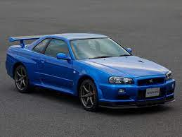

nisan-skyline
Nissan Skyline — один з найбільш старих видів японських автомобілів — понад 50 років існує дана марка і значана кількість автомобілів було випущено під знаком "Skyline". Його виробництво почалося в 1955 появи Skyline ALSI-1 — автомобіля створеного Prince Motor Company.Дана компанія була створена в 1952 електромобільною компанією Тама, яка в свою чергу була заснована авіаційною компанією Tachikawa, вона будувала винищувачі в Другу світову війну, а в 1952 почала виробляти електричні автомобілі Tama.
nisan skyline став популярним завдяки своїому гоночному виду і появою на гонках